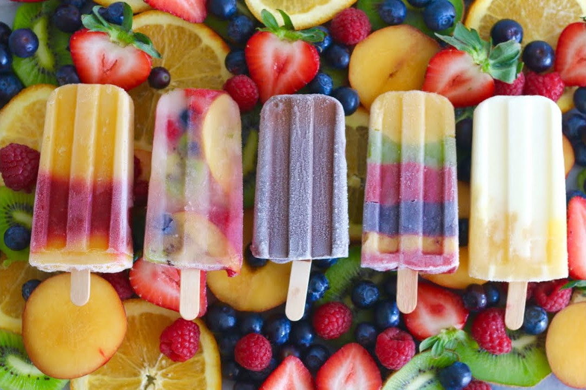

The earliest known frozen pops date as far back as 1872. Back then, a frozen pop was called a Hokey-Pokey.
Frozen pops are also known as freezer pops, ice lollies, and ice pops
The world's largest frozen pop was made in 1997 and was 21 feet tall
Frozen pops have become so POP-ular that a common arts and craft item is called a popsicle stick name after the most famous brand of pop.

Mark this very special occasion of the launch of Fred's Frozen Pops by buying a gift from out stunning array of items, shipped directly from Cleveland
Don't forget to sign up for the race! Each participant will receive their own box of pops when they reach the end
Store